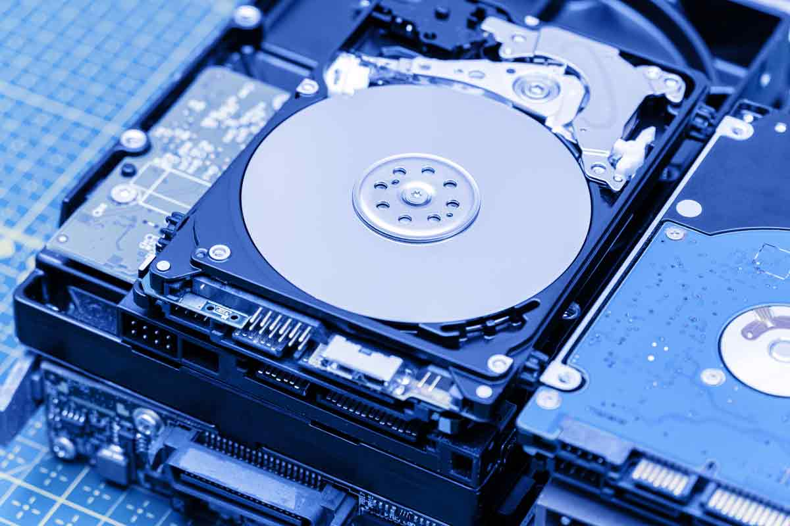

PROCESADORES
Intel establece el estándar de la industria para el desempeño e innovación de procesadores, el fortalecimiento de las laptops, las desktops, las estaciones de trabajo y los servidores, para uso empresarial y personal, gaming inmersivo, creación de contenido, Internet de las cosas, inteligencia artificial y más. Explora la variedad de opciones aquí.

PLACA MADRE
La placa madre es la columna vertebral que une los componentes del computador en un mismo punto y les permite comunicarse entre sí. Sin ella, ninguna de las piezas del computador, como el CPU, la GPU o el disco duro, podrían interactuar.

DISCO DURO
Un disco duro o disco rígido es un dispositivo de almacenamiento de datos no volátil que emplea un sistema de grabación magnética para almacenar datos digitales de forma rápida y segura. También se le conoce como Hard Disk Drive o por su acrónimo HDD.
TARJETAS
La tarjeta gráfica, también conocida como tarjeta de video, es un componente electrónico que está integrado en la placa base del ordenador, o que también puede instalarse después con la finalidad de aumentar la capacidad del equipo.

Una red de área local (LAN) es una red contenida dentro de una pequeña zona geográfica, normalmente dentro de un mismo edificio. Las redes WiFi domésticas y las redes de pequeñas empresas son algunos ejemplos comunes de LAN.

Plataforma es un concepto con varios usos. Por lo general se trata de una base que se halla a una cierta altura o de aquello que brinda un soporte, ya sea físico o simbólico. El uso más habitual del término virtual, por su parte, está vinculado a lo que existe de manera aparente o simulada, y no físicamente.